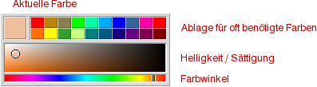

Farben |
|
 In der WonderBrush Oberfläche ist ein spezieller Bereich für Farben reserviert. Es gibt eine "momentan gesetzte Farbe" (größeres Feld links), die für neue Objekte gilt, sowie eine Anzahl von "Farbnäpfchen", welche sich über das Farben Menü auch als Palette speichern oder laden lassen. Durch Ziehen und Fallenlassen kann die aktuelle Farbe in einem Farbfeld abgelegt werden. In vielen anderen Bereichen des Programms wird das Ziehen und Fallenlassen von Farben ebenfalls unterstützt (z.B. auf die Objekt Liste, um die Farbe ausgewählter Objekte zu setzen). Durch Klicken auf die aktuelle Farbe öffnet sich ein Farbauswahldialog, der eine feinere Abstimmung der Farbe erlaubt, als es durch die beiden Farbbearbeitungsfelder unter der Palette schon möglich ist. |
|
Ist das Farbverlaufswerkzeug momentan gesetzt und das Verlaufsbearbeitungsfeld aktiviert, so überträgt sich die aktuelle Farbe automatisch auf den aktiven Verlaufspunkt, um eine vereinfachte Bearbeitung der Verlaufspunkte zu ermöglichen. |